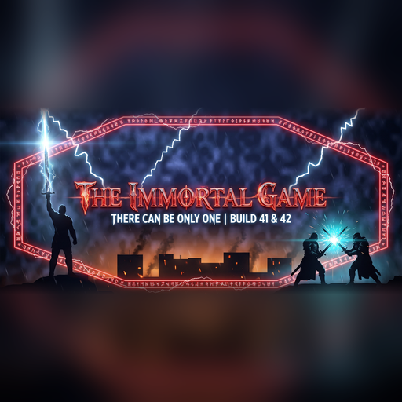

There Can Be Only One: The Knox Gathering
A canon July 1993 Highlander survival RPG and Louisville endgame overhaul. Start 100% mortal, survive First Death to awaken your Quickening, respect Holy Ground, visit Duncan MacLeod’s Antique Store sanctuary, and defeat Jacob Kell to claim The Prize.